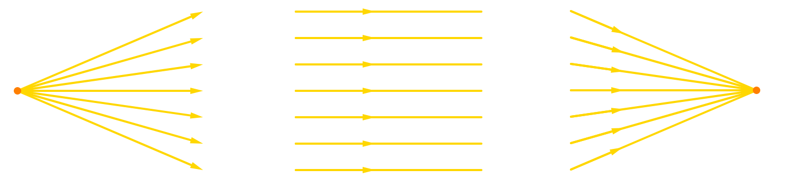
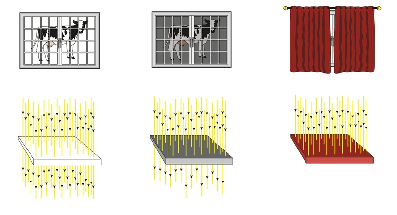
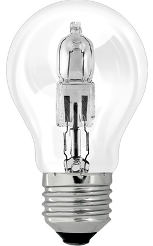
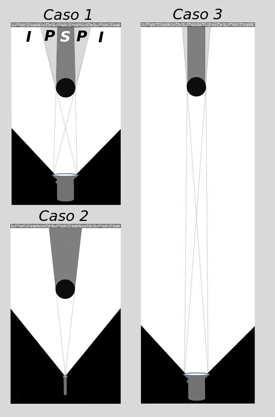
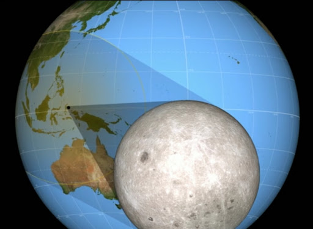

A luz é um ente físico visível (que é capaz de sensibilizar a retina) de natureza simultaneamente corpuscular e ondulatória.
Raio de luz é uma linha imaginária usada para fins de representação da trajetória da luz.
Feixe de luz é um conjunto de raios luminosos. Estes arranjos de raios de luz podem ser classificados em:
|
Divergente |
Cilíndrico |
Convergente |

Por ora, em óptica geométrica, estudaremos três fenômenos ópticos:
Reflexão: É o fenômeno físico que faz um feixe de luz (ou qualquer outra onda eletromagnética) alterar sua trajetória ao se deparar com um obstáculo. Este bloqueia a passagem do feixe, ao menos em parte, e a direção de sua trajetória muda.
Absorção: É o fenômeno físico capaz de bloquear a luz de determinada frequência, retendo sua energia sem refleti-la.
Refração: É o fenômeno físico que faz a luz (ou qualquer outra onda eletromagnética) alterar sua velocidade ao passar de um meio a outro.
Meio transparente: É o meio que permite a passagem integral ou quase integral da luz. Nesses meios, praticamente toda a luz que incide sobre eles os atravessa sem prejuízo algum.
Meio translúcido: É o meio que permite a passagem parcial da luz. Ao tentar atravessá-lo, a luz é em parte bloqueada, em parte desviada, e apenas uma parcela consegue atravessá-lo sem prejuízo.
Meio opaco: É o meio que impede completamente a passagem da luz.
|
Transparente |
Translúcido |
Opaco |

Chamamos de fonte de luz todo corpo que irradia luminosidade. Assim, todo corpo visível é fonte de luz. Podemos classificar as fontes luminosas em dois tipos:
Fontes primárias: São as fontes que “fabricam” a luz. São exemplos desse tipo de fonte:
◦ O sol e todas as outras estrelas visíveis;
◦ O pavio aceso de uma vela.
Fontes secundárias: São as fontes que recebem luz de uma fonte primária e a refletem. São exemplos desse tipo de fonte:
◦ A lua;
◦ Uma tela de pintura.
|
 |
|
As fontes de luz podem ser enquadradas em duas categorias — pontuais ou extensas — de acordo com a relevância de suas proporções:
Fonte de luz pontual: é a fonte que, para fins de cálculo, faz emanar raios luminosos a partir de um único ponto. Em outras palavras, esse tipo de fonte tem dimensão desprezível. São exemplos desse tipo de fonte:
◦ As estrelas (exceto o Sol) quando observadas aqui do planeta Terra;
◦ Uma vela quando suficientemente distante do observador.
Fonte de luz extensa: é a fonte que, para fins de cálculo, faz emanar raios luminosos a partir de mais de um ponto. Em outras palavras, esse tipo de fonte possui dimensões não desprezíveis. São exemplos desse tipo de fonte:
◦ O Sol quando observado a partir do planeta Terra;
◦ Uma lâmpada quando próxima do objeto iluminado.

Atenção: perceba que a classificação da fonte em pontual ou extensa depende, entre outros fatores, da distância dessa fonte aos objetos que interagem com a sua luz.
Caso 1: Trata-se claramente de uma fonte extensa. Observe que, nesse caso, como a luz emana de diferentes pontos da fonte, ela origina, ao passar pelo anteparo, três regiões de características diferentes:
Região iluminada (I): região contemplada por raios que emergem de todos os pontos da fonte;
Região de sombra (S): área em que nenhum raio de luz proveniente da fonte penetra;
Região de penumbra (P): área em que penetram raios emanados de apenas alguns pontos da fonte.
Caso 2: Observe que os raios partem todos de um único ponto. Trata-se, logo, de uma fonte pontual. Nesse caso, temos apenas região de sombra, sem penumbra.
Caso 3: Trata-se de uma fonte extensa.
Um dos argumentos que validam tal afirmação é que, em situação de eclipse lunar ou solar, esse fenômeno astronômico faz surgir uma expressiva região de penumbra — algo característico de fontes extensas.
